Вітальня · журнал «ДентАрт» 2021 №2
Професор Жил Алькофорадо: «Удосконаленню у стоматології немає меж!»
PROFESSOR GIL ALCOFORADO: THERE ARE NO LIMITS TO IMPROVEMENT IN DENTISTRY
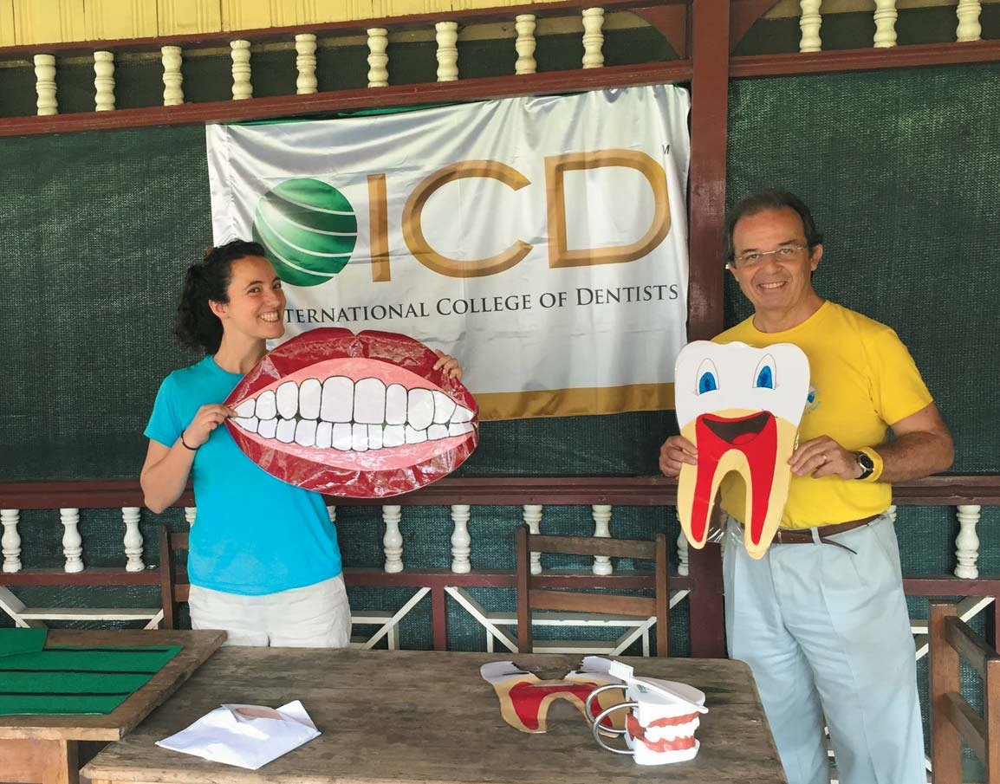
У Вітальні «ДентАрту» сьогодні – професор, доктор Жил Альвес Пессанья Алькофорадо з Португалії, відомий стоматологічній спільноті як науковими дослідженнями в галузях пародонтології та реабілітації на імплантатах, викладацькою діяльністю в університетах Європи і США, так і активною волонтерською роботою у країнах, що розвиваються.
Професор Жил Алькофорадо – президент Європейської секції Міжнародної колегії стоматологів, голова Philip Dear Foundation. Він був засновником і президентом Португальського пародонтологічного товариства, а також Європейської федерації пародонтології. У минулому голова Іберійської секції, нині він – член Міжнародної групи імплантологів, член Академії П'єра Фошара та Американської колегії стоматологів.
Мій батько був піонером на багатьох напрямках стоматології
– Шановний професоре Алькофорадо, Ви нині президент Європейської секції Міжнародної колегії стоматологів, і ми знаємо, що Ваш батько Жил Алькофорадо Старший причетний до заснування Європейської секції ICD... Ви знаєте, як це було?
– Слідувати стопами мого батька у Міжнародній колегії стоматологів і в житті загалом мені було досить складно. Свого часу мій батько був піонером на багатьох напрямках стоматології. Він першим застосував стоматологічну кераміку в Португалії, але не став об'єднувати свою власну клініку із зуботехнічною лабораторією, доки сам не освоїв цю техніку, хоча на початку шістдесятих у нього вже працювали два зубних техніки... Це лише один з прикладів його бачення професії.
Міжнародна колегія стоматологів була майже невідома в Європі у середині п'ятдесятих років. У 1955 році один з батькових викладачів, професор стоматологічної школи Женевського університету, де він отримав ступінь доктора стоматології після здобуття вищої медичної освіти в Коїмбрському університеті в Португалії, професор Франсуа Аккерман запросив батька на зустріч стоматологів в Амстердамі. Під час цієї зустрічі деякі американські стоматологи з центрального офісу Міжнародної колегії стоматологів організували церемонію вступу, на якій у члени ICD були прийняті три стоматологи, і одним із цих трьох був мій батько. Щоб бути присутнім на цій зустрічі, мій тато мало не пропустив моє народження, бо я народився в Лісабоні на п'ятнадцять днів пізніше.
Того ж року була створена Європейська секція ICD...
Усупереч уподобанням моєї сім'ї я не став інженером-ливарником
– Якщо Ваш батько був знаменитим стоматологом, то у Вас, мабуть, не було сумнівів, стати стоматологом самому чи ні? Як сталося, що Ви обрали стоматологію своєю професією?
– Насправді мій батько щосили намагався переконати мене здобути інженерну освіту, бо у сім'ї моєї матері був ливарний завод, і я мав брати участь у сімейному бізнесі. Але всупереч уподобанням моєї сім'ї у жовтні 1973 року я вступив у медичну школу і тому не став інженером-ливарником...
25 квітня 1974 року в Португалії відбулася революція, і життя в країні зазнало серйозних змін! Завдяки встановленню демократичної системи уряд Норвегії надав допомогу Португалії, відкривши велику лікарню на півночі країни і дві стоматологічні школи, одну в Лісабоні і одну в Порто. Я закінчував тоді третій курс медицини, але вирішив записатися в нову стоматологічну школу, і мене взяли. Я провчився ще три роки у стоматологічній школі і закінчив її у червні 1980 року. Через рік я отримав грант від норвезького уряду і переїхав у Берген, щоб пройти трирічний курс пародонтології, який закінчив за два роки.
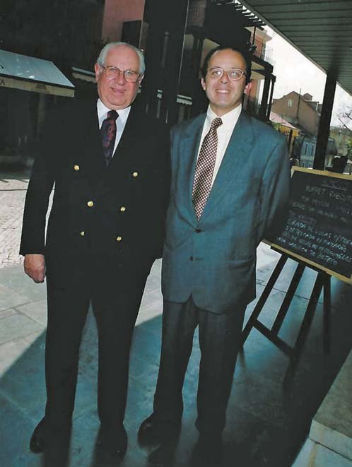
Повернувшись у Португалію, я розпочав лікарську практику як стоматолог загального профілю, але із січня 1987 року обмежив стоматологічну практику лише пародонтологією. Пізніше мене запросили на рік як запрошеного професора у Пенсильванський університет, а потім ще на цілий рік у Мічиганський університет, де я вів дослідження, викладав у аспірантурі, а також використовував вільний час для розвитку інших стоматологічних напрямків. Кілька років я проводив літні канікули в Університеті Південної Каліфорнії, щоб провести додаткові дослідження з одним із моїх наставників, професором Йоргеном Слотсом.
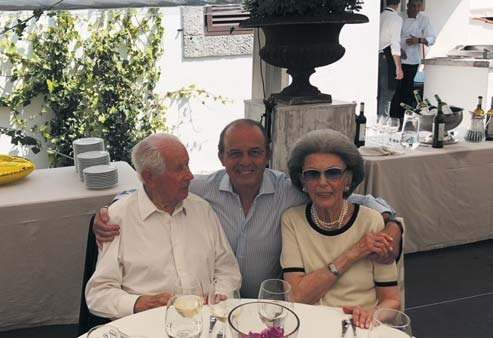
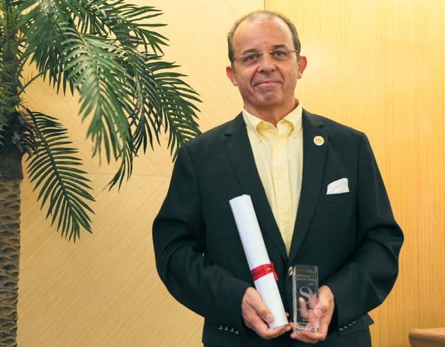
– У Вашій родині хтось ще обрав стоматологію своєю професією?
– На щастя, стоматологія поширилася в сім'ї з того часу, як мій племінник Мігель прийняв на себе практику мого батька, а моя донька Ізабель рік тому закінчила стоматологічну школу і тепер працює у моїй клініці та викладає оперативну стоматологію в Університеті імені Егаса Моніша, де я декан.
Маємо дивитися на стоматологію через біологічний підхід
– Ми знаємо Вас як лідера світової пародонтології, і не тільки... Чому були присвячені Ваші наукові дослідження останнім часом?
– В університеті ми створюємо центр передового досвіду з вивчення пародонтиту та періімплантиту. Щоб підвищити рівень наших досліджень, я недавно запросив професора Бьорна Клінге стати співробітником нашого факультету за сумісництвом. Ми нині в процесі встановлення тісних зв'язків з кількома пародонтологічними кафедрами, а саме з університетами Каролінським і Мальме у Швеції та Левена в Бельгії. Паралельно з дослідженнями я недавно організував післядипломний курс з імплантології, який складається з одинадцяти модулів. У нас є кілька висококласних португальських професорів і кілька всесвітньо відомих клініцистів, таких як професори Маттео Чьяпаско, Марк Квірінен, Фуад Хурі і Маркус Хюрцелер.
– Ви викладаєте в університетах Європи і США, знаєте системи стоматологічної освіти багатьох країн. Яка національна система підготовки стоматологів, на Ваш погляд, найкраща і чому?
– Після відвідин різних країн і роботи в їхніх освітніх системах я зрозумів, що в усіх університетах, де я працював, є хороші і не дуже хороші аспекти. Але хочу сказати, що на мене великий вплив зробив біологічний підхід скандинавської системи. Вважаю, що це стає нормою в більшості країн і в їхніх стоматологічних системах освіти. Маємо дивитися на стоматологію через біологічний підхід, який, на мій погляд, – єдина система, що має сенс. Стоматологія – це передусім дуже багато практичної роботи. Однак ця робота повинна бути добре обґрунтована біологічними принципами і наукою, заснованою на доказах. Виявляється, це робить лікування в роті набагато цікавішим.
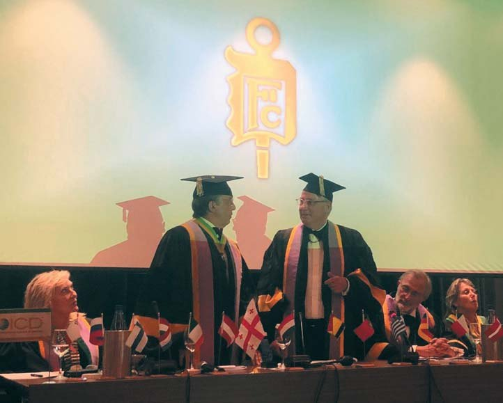
Треба вкладати більше грошей і зусиль у первинну профілактику
– З волонтерською місією Ви побували у багатьох країнах, що розвиваються, навчаючи дітей гігієні ротової порожнини. Це дуже цікавий і цінний досвід, а ще – свідчення благородства Вашого серця. Як змінили ці проєкти Ваше уявлення про стоматологічне здоров'я?
– Усі ці проєкти – маленькі краплини у великому океані. Але океан складається з краплин... Коли я беру участь у деяких проєктах, я почуваюся добре, але в той же час відчуваю себе «маленьким». Я зустрічав так багато людей, у яких, на перший погляд, мало що є, але які все ще діляться з іншими і тим скромним набутком, який мають. Це збагачує і дозволяє поглянути на речі в перспективі. Я б хотів мати більше часу, щоб брати участь у більшій кількості таких проєктів. Ми не повинні говорити про участь у гуманітарних проєктах як про альтруїзм, поскільки ми, напевно, отримуємо набагато більше, ніж даємо цим людям.
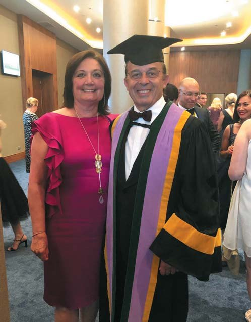
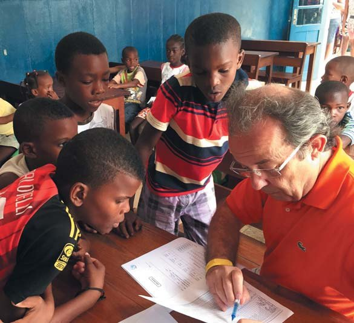
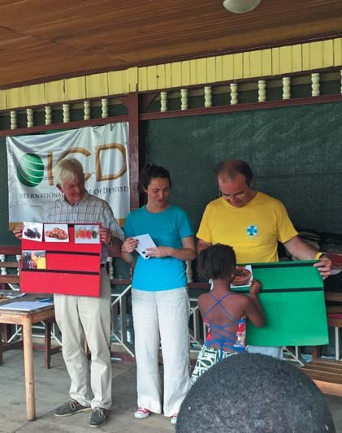
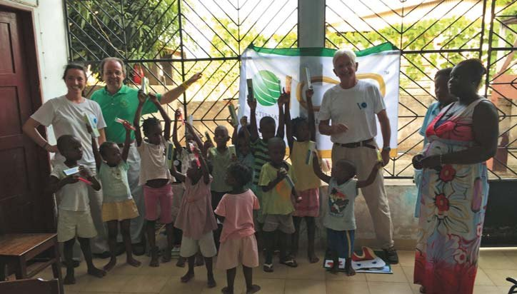
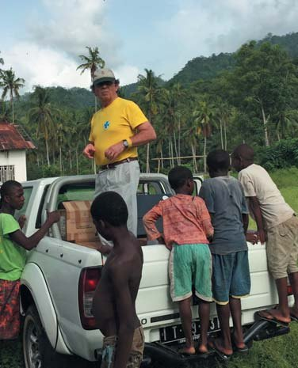
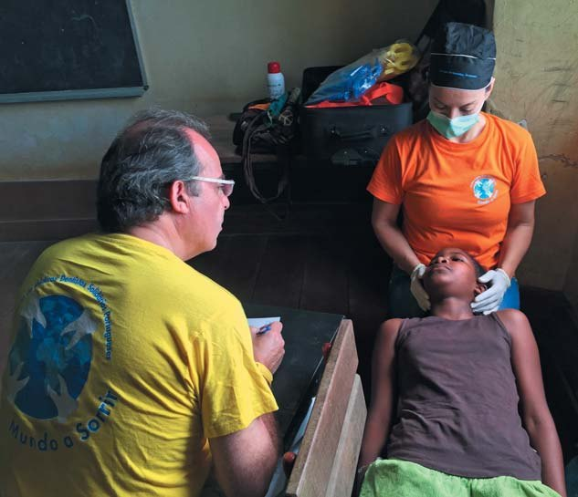
Гуманітарний проєкт ICD і недержавної організації «Smiling world» у Сан-Томе і Принсіпі (Центральна Африка). ICD через свій фонд Philip Dear Foundation частково підтримала програму з гігієни ротової порожнини. Це дозволило, зокрема, провести первинну профілактику і лікування дітей від 6 до 10 років у більшості шкіл у столиці Сан-Томе.
Я дуже вірю у профілактичне здоров'я ротової порожнини і профілактику в цілому! Державам слід приділяти більше уваги первинній профілактиці. Але, на жаль для політиків, профілактика не приносить швидкої віддачі. Результати запобігання захворюванням недостатньо швидкі, щоб вплинути на їх переобрання на виборах. З огляду на те, що первинна профілактика в нашій сфері (і, звичайно, в інших) менш затратна і більш ефективна, дивно, чому ці заходи не включаються частіше, ніж є, у політичні програми урядів у всьому світі...
– А у Вашій рідній Португалії населення відповідально ставиться до гігієни ротової порожнини? Що повинні робити стоматологи і що має робити держава, щоб підняти культуру догляду за зубами у кожного пацієнта і у населення в цілому?
– Стоматологічна грамотність у Португалії значно зросла за останні кілька десятиліть. Однак вона все ще не на належному рівні. Знову ж таки, слід вкладати більше грошей і зусиль у первинну профілактику. Ми не будемо винаходити нічого нового. Нам залишається лише спостерігати за результатами таких програм у Скандинавії та Швейцарії. Деякі зі скандинавських країн домоглися величезних успіхів у значному скороченні захворюваності карієсом за допомогою добре розроблених профілактичних програм. Ми знаємо, що за допомогою дуже ефективного чищення зубів і професійних профілактичних заходів можна практично викорінити карієс та захворювання пародонта. З робіт Аксельссона, Лінде, Наймана та інших, із досліджень, опублікованих у сімдесяті роки і пізніше, ми знаємо, що з цими захворюваннями можна боротися. На жаль, «сучасний» стоматологічний світ інакше дивиться на ці дослідження і вважає, що вони недостатньо «сексуальні» або занадто прості... Так, вони прості, але вони працюють! Я завжди будував свою практику на цих принципах, і, напевно, саме тому роблю менше видалень і менше стикаюся з випадками періімплантиту. Про цей надзвичайно важливий аспект можна було б сказати набагато більше...
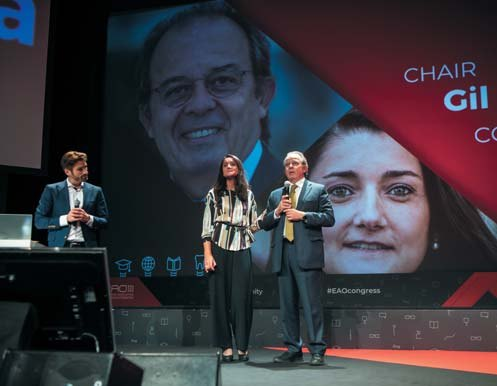
– Як працює Ваша клініка – Клініка Алькофорадо – в умовах довгої-довгої пандемії?
– У березні 2020 року я закрив клініку, бо уряд видав розпорядження про закриття стоматології на кілька днів. Ми залишалися закритими ще два повні місяці, і протягом цього періоду ми приходили в клініку лише в екстрених випадках. Після закінчення цього терміну почали працювати з усіма можливими захисними заходами. Гадаю, доведеться використовувати їх ще багато літ...
– Забезпечення стоматологічного здоров'я населення – це функція держави! А що можуть зробити громадські професійні організації для цього?
– На жаль, у Португалії держава дуже мало робить для профілактики захворювань ротової порожнини у населення. Вона надає стоматологічні огляди (150 євро на рік) деяким групам: дітям, вагітним жінкам і літнім людям із малозабезпечених сімей, але обирає неправильну методику для надання допомоги. Замість того, щоб просувати профілактичне лікування ротової порожнини, вважають за краще використовувати лікувальні методи.
Я член недержавної організації «Mundo-a-Sorrir» – «Smiling world», у якої є кілька проєктів як у Португалії, так і в різних країнах Африки, зокрема в Сан-Томе і Принсіпі, Гвінеї-Бісау та Кабо-Верде.
Наша головна мета – популяризація стоматологічної первинної профілактики серед місцевого населення, у школах, будинках для людей похилого віку та інших установах. У нас є кілька клінік у Порту, Бразі, Лісабоні і Кашкайші (Португалія), і одна недавно відкрилася у Гвінеї-Бісау (Західна Африка). Ці клініки працюють лише за рахунок добровольців лікарів-стоматологів та зубних техніків. Вони здійснюють стоматологічне лікування малозабезпечених верств населення. Потрібні матеріали ми отримуємо як гуманітарну допомогу від стоматологічних фірм-постачальників.
Побажаю колегам любити свою справу так само, як я люблю свою!
– Університет, клініка, міжнародні конференції, волонтерські поїздки в різні країни вимагають великої енергії... Що дає Вам сили впоратися з навантаженнями? Які у Вас захоплення, окрім пародонтології та імплантації?
– Сил надає пристрасть до своєї професії! Я люблю свою роботу, як клінічну, так і університетську, хоча волів би мати більше часу на гуманітарні проєкти. Я все життя говорив, що повинен змінитися і зменшити оберти! Але мушу сказати, що поки що результати цього прагнення були не дуже добрими. Думаю, мені важко сказати самому собі «ні»...
Я люблю грати в гольф, але недавно повернувся до любові моєї юності – катання на водних лижах. Готуюся до поїздки у вересні на чемпіонат Європи в Італії, очевидно, братиму участь у змаганнях у категорії «Jurassic Class», це вікова група 65+ років. Моя головна мета – просто брати участь і по можливості не бути останнім!
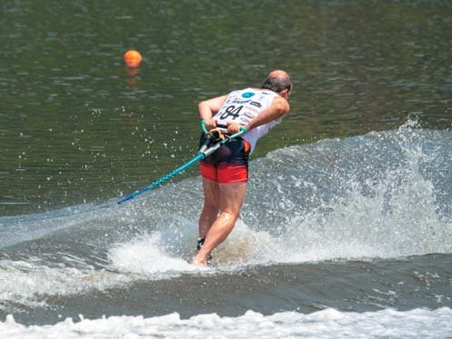
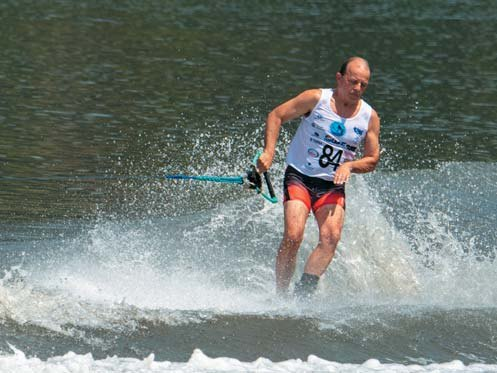
– Що б Ви побажали читачам журналу «ДентАрт»?
– Побажаю колегам любити свою справу так само, як я люблю свою! І не забувайте: день, коли ви не хочете дізнаватися щось нове чи набувати більше навичок у якійсь процедурі, – це день, коли ви готові вийти на пенсію!
Я веду багато курсів навчання сам, але недавно поїхав у Мюнхен, щоб самому вивчити кілька нових технік і поліпшити інші, в яких уже мав певний досвід...
Ви ЗАВЖДИ можете і далі розвивати свої навички. Удосконаленню у стоматології немає меж!
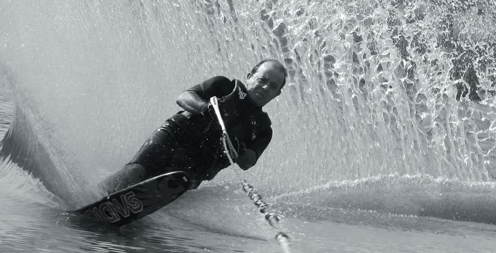